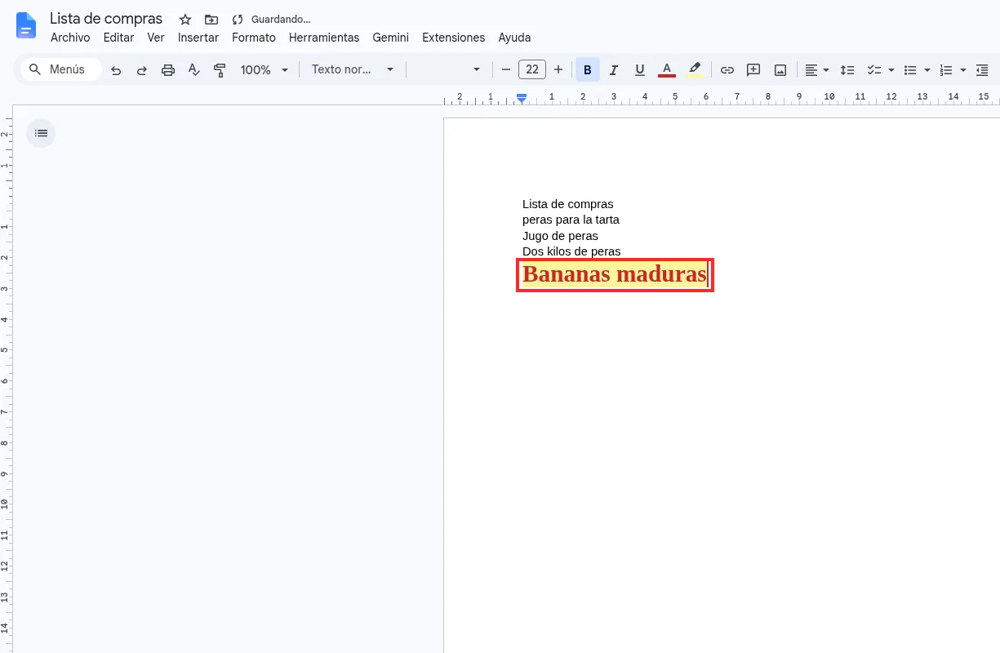
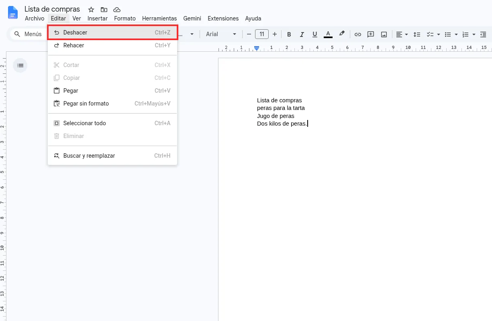
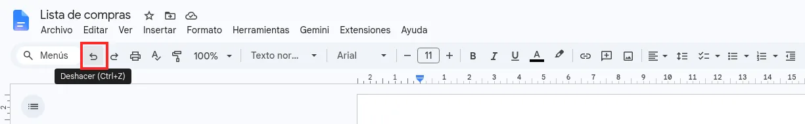
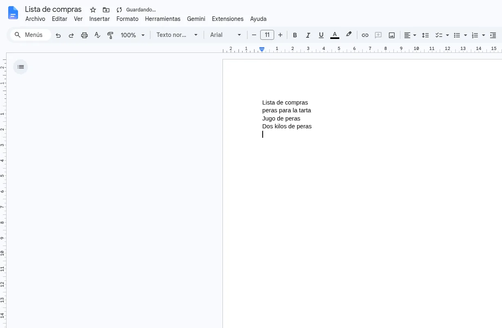
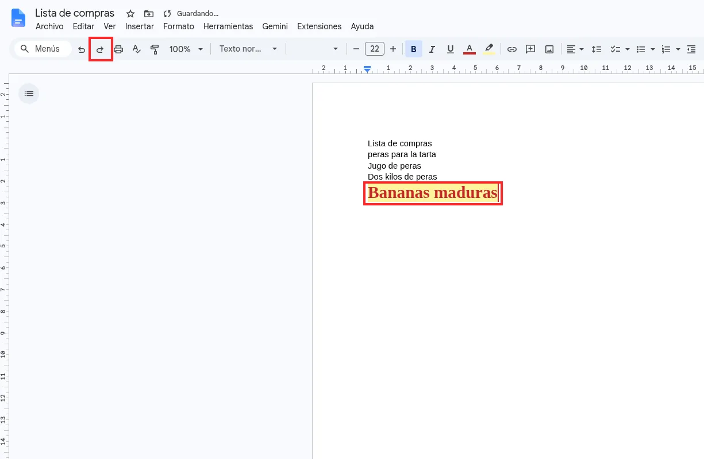
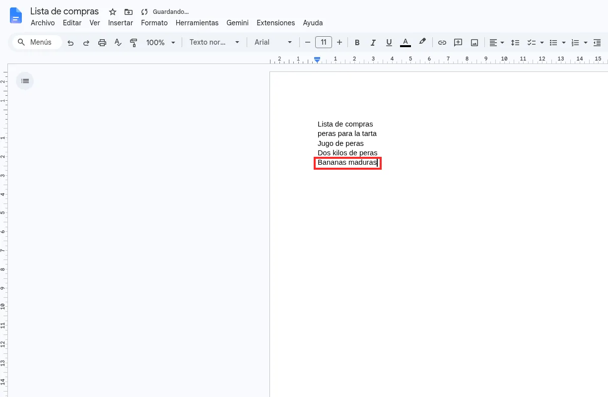

Curso de Google Documentos › Editar › Lección 11
Lección 11 de 53 · menú Editar
Cómo deshacer, rehacer y pegar sin formato en Google Docs (atajos)
Fecha del video: · Programado
¿Pegaste un texto en Google Docs y te cambió la letra, el color o el tamaño? Con Deshacer volvés atrás, con Rehacer recuperás el cambio y con Pegar sin formato el texto entra con la letra de tu documento. Las tres opciones están en el menú Editar.
En el ejemplo usamos el documento «Lista de compras»: pegamos «Bananas maduras» copiado con otra letra (más grande, roja y resaltada) y después lo deshicimos. El documento quedó como estaba.

Paso 1: deshacé el último cambio
Andá a Editar → Deshacer o apretá Ctrl + Z (en Mac, ⌘ + Z). También podés tocar la flecha Deshacer de la barra de herramientas, arriba a la izquierda. Cada vez que lo usás, vuelve atrás un cambio más.


Lo que habías pegado desaparece y el documento vuelve a como estaba.

Paso 2: si te arrepentiste, rehacé
Con Editar → Rehacer o Ctrl + Y el cambio vuelve. La Ayuda de Google también da Ctrl + Mayús + Z (en Mac, ⌘ + Mayús + Z). En la barra de herramientas es la flecha que está al lado de Deshacer.

Paso 3: pegá sin formato
Copiá el texto y, en vez de Pegar, usá Editar → Pegar sin formato o Ctrl + Mayús + V (en Mac, ⌘ + Mayús + V). Así no se trae la letra, el color ni el tamaño de donde lo copiaste.

El texto entra con la misma letra del documento (en el ejemplo, Arial 11, sin color ni resaltado).

Tip: según la Ayuda de Google, por seguridad muchos navegadores no dejan usar el portapapeles desde los menús. Si Editar → Pegar o Pegar sin formato no te funciona, usá los atajos de teclado o el menú del clic derecho.
Mirá el Short
Estreno del Short: 26/11/2026 · 17:00 (hora Argentina)
Video relacionado: Google Docs: menú Editar paso a paso (tutorial completo) — el video largo del menú Editar (verlo en YouTube).
Fuente oficial: Ayuda de Editores de Documentos de Google. Capturas propias en un documento de ejemplo («Lista de compras»). El video usa voz generada con IA.